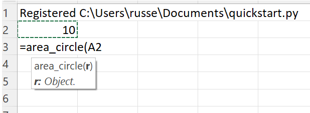
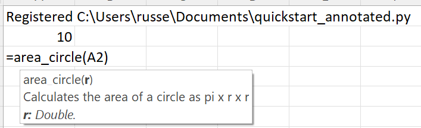

Quickstart¶
Let’s start with this simple Python module that contains these functions to calculate the area of various shapes. As you can see, the code is very simple and there are no changes to support xlSlim.
# Various functions to calculate areas
import math
def area_circle(r):
return math.pi * r ** 2
def area_square(l):
return l * l
def area_rectangle(l, w):
return l * w
Note
All the Python code and Excel files shown are available from github in the xlslim-code-samples repo. I highly recommend downloading the samples from github. The Excel workbooks contain many tips and tricks.
Save the Python code as a new file on your PC. I saved the file in my Documents folder.
Open Excel and enter this RegisterPyModule() formula (amending the location to match where you saved the file):
=RegisterPyModule("C:\Users\russe\Documents\quickstart.py")
That’s it! The functions are now available to use in Excel.
{kind=link}
Type Hints and Doc strings¶
To make full use of xlSlim’s capabilities, use type hints and doc strings to provide more information about your functions.
Replace the quickstart.py code with this:
# Various functions to calculate areas
# With doc strings and type hints
import math
def area_circle(r: float) -> float:
"""Calculates the area of a circle as pi x r x r"""
return math.pi * r ** 2
def area_square(l: float) -> float:
"""Calculates the area of a square as l x l"""
return l * l
def area_rectangle(l: float, w: float) -> float:
"""Calculates the area of a rectangle as l x w"""
return l * w
And re-register the module in Excel:
=RegisterPyModule("C:\Users\russe\Documents\quickstart.py")
Now the function looks much better, with documentation and the correct types.
{kind=link}